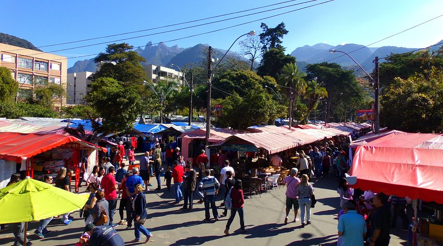

Feirinha do Alto
A Feirarte (Feira de Artesanato de Teresópolis) também conhecida como Feirinha do Alto, existe desde 1983 e reúne artesãos de diversos ramos artísticos em mais de 700 barracas. O destaque são para as peças de vestuário, vendidas em grande variedade e preços convidativos. Possui praça de alimentação e eventos artísticos. Está localizada na Praça Higino da Silveira, no Bairro do Alto, em Teresópolis. Funciona aos sábados, domingos e feriados.
Iniciada por volta de 1973/1974 por quatro moradores da cidade e um grupo de sul-americanos, que demonstravam seus produtos puramente artesanais em lonas abertas no meio da praça do alto, visando os turistas que visitavam a cidade de ar puro e clima de montanha. Regulamentada pela prefeitura em 1985, transformou-se na maior feira de artesanato do Rio de Janeiro.
